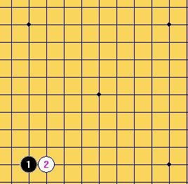
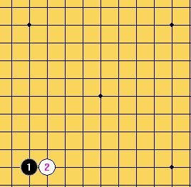

2012爱五子棋新规则测试赛第一季====宽容规则测试（欢迎跟帖报名）
#1 <font color="red">2012爱五子棋新规则测试赛第一季====宽容规则测试（欢迎跟帖报名）</font>作者：失落刀 发表时间：2012-4-23 23:33:58
RT
测试谱根据质量均将获得威望或（和）金币。
感谢测试。
逆刃注：
目前宽容规则正在测试中……
目前测试情况，先后手各有胜负，黑白各有胜负，出现和棋情况，中心、边角均可下；
特邀请有兴趣参与测试的棋友在本帖后面跟帖报名！我将根据报名人员情况开贴测试！如果有想邀请对弈的人的也可在跟帖中说明，比如邀请和逆刃对局。目前参与测试的有逆刃，茗弈小刀，潇洒，冥王哈迪斯。
［此帖子已被 逆刃 在 2012-5-7 13:45:09 编辑过］
#2 Re:2012爱五子棋新规则测试赛第一季====宽容规则测试作者：失落刀 发表时间：2012-4-23 23:38:36
这个规则是由逆刃平时自己玩的规则中演变出来的，觉得有点意思，没有要改变现行职业比赛规则的意思，只是发出来大家交流下，有希望玩的也可以一起玩玩。
宽容规则介绍：
1. A下第一手和第二手。这两子必须在四角星位范围以内，且白2须紧贴黑1（直指或斜指）。
2. B下第三手，必须在四角星位范围以内，且应与黑1，白2任一子距离3格或3格以内。
3. A下第四手，无任何限制。
4. B有权作出两种选择：
4-1. 自己下第5手，无任何限制。
4-2. 交给A下第5手，同样无任何限制。
5. 无论是A还是B下第5手，对手方均有权选择执黑或执白。
6. 以下按标准禁手规则行棋。
以上规则相应解释：
1： 

2：


大概说一下，这个规则包括了目前的rif，山口，也包括了边角，其实第4第5手是有相应限制的，因为双方都需要保证在第5手后平衡。
另：
1：棋盘可以用围棋19路盘；
2: 5手后亦可双方无禁手行棋。
［此帖子已被 失落刀 在 2012-4-23 23:39:53 编辑过］
［ 逆刃 于 2012-4-23 23:52:34 时花20金币送鲜花一朵］
［ 西北狼梦魂 于 2012-4-24 21:02:12 时花20金币送鲜花一朵］
#3 Re:2012爱五子棋新规则测试赛第一季====宽容规则测试作者：越狱行辕 发表时间：2012-4-24 15:36:04
有点复杂了，感觉不太适合作为流行规则#4 Re:2012爱五子棋新规则测试赛第一季====宽容规则测试（欢迎跟帖报名）作者：逆刃 发表时间：2012-5-7 13:45:44
欢迎有兴趣的棋友跟帖报名参与测试！#5 Re:2012爱五子棋新规则测试赛第一季====宽容规则测试（欢迎跟帖报名）作者：啊呆 发表时间：2012-5-12 23:56:57
顶一个~
［ 逆刃 于 2012-5-13 0:26:20 时花20金币送鲜花一朵］